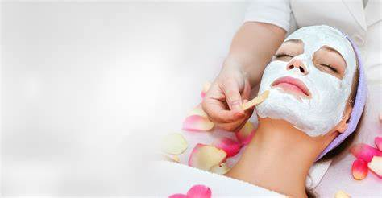
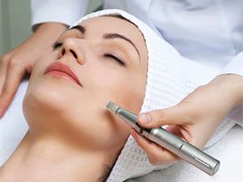
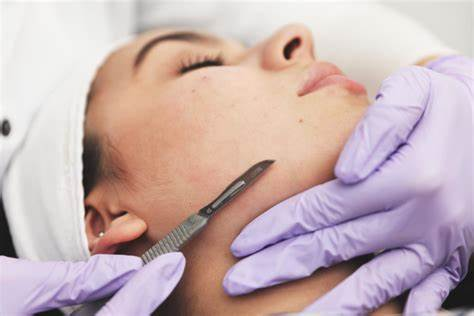
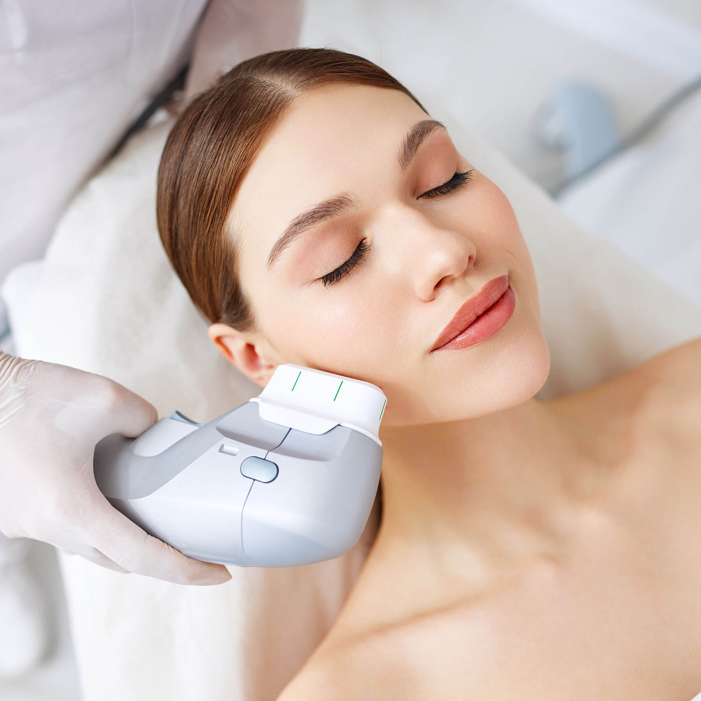
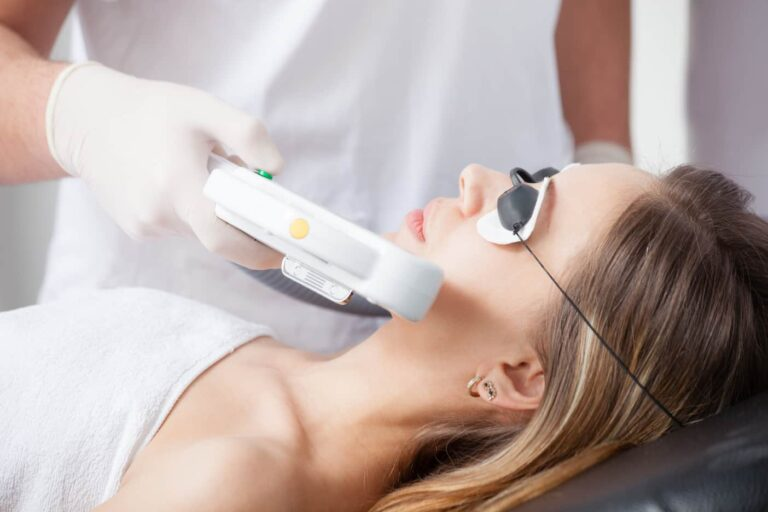
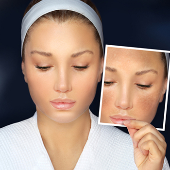

TRATAMIENTOS FACIALES
Limpieza facial
DERMAPEN Es un tratamiento estético facial que simula un lápiz con micro agujas, preparado para ir penetrando por las diferentes zonas de la piel donde se proyecte. Con este procedimiento es posible atacar desde las líneas de expresión, cicatrices hasta las marcas de acné. Y por si fuera poco, el Dermapen permite potenciar varios efectos positivos en la piel, como es el caso de la nueva formación de elastina y colágeno de manera natural.
PEELING facial es un tratamiento dermatológico que exfolia las capas superficiales de la piel para mejorar su calidad y textura. Hay dos tipos principales de peeling facial: 1. Peeling químico superficial: Suave, utilizado para tratar problemas leves de pigmentación o textura del rostro. 2. Peeling químico medio: Penetra un poco más en la piel y ayuda con arrugas, manchas solares y cicatrices de acné
HIFU 7D Uno de los tratamientos más demandados en el último tiempo es el HIFU o ultrasonido focalizado de alta intensidad Los resultados del HIFU 7D más apreciados en la zona facial, respetando los rasgos naturales son: Efecto lifting del rostro, Piel más tersa y firme, Elevación de frente y cejas corrigiendo la mirada, Mejora en la calidad de la piel, Reducción de arrugas y líneas, Levantamiento de las mejillas y reducción de flacidez y grasa, Definición del contorno de la mandíbula y reducción de papada, Reducción de la hiperpigmentación, Elevación de comisuras labiales, Reducción de poros dilatados
DEPILACION láser es un método de depilación definitiva que elimina el vello desde la raíz. Utiliza una luz monocromática y unidireccional que penetra en la piel sin dañar. Funciona mediante la emisión de luz que llega hasta el folículo piloso más profundo, debilitándolo y haciéndolo más delgado. El resultado puede variar según el tipo de vello y el sistema hormonal.
Tratamientos Despigmentantes
     